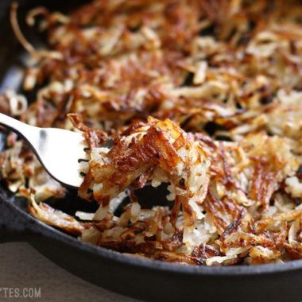

Time: 30 minutes
Cost: $5.00
Servings: 2
1. Peel the potatoes, if desired. Use a large-holed cheese grater or food processor to shred the potatoes. Place the potatoes in a
2. Squeeze the potatoes of their excess water by pressing against the side of the
3. Heat a large cast iron or non-stick skillet over medium heat. Once hot, add a tablespoon of cooking oil and spread the oi, l over the surface. Add about 1/3 of the shredded potatoes. Let the potatoes fry, until deeply golden brown on the bottom (3-5 minutes). Season lightly with seasoning salt.
4. Flip the potatoes and drizzle additional oil if needed. Let the potatoes cook on the second side without disturbing until golden brown and crispy again. Season lightly.
5. Cook until the ratio of brown and white is to your liking.
Source: https://www.budgetbytes.com/2016/04/make-crispy-hash-browns/